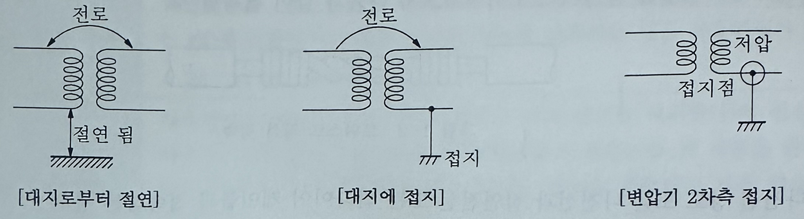
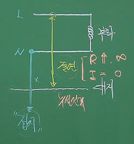

3. 전로의 절연
1. 전로의 절연 원칙

가. 전로는 다음 이외에는 대지로부터 절연하여야 한다.

- 수용장소의 인입구의 접지
- 고압 또는 특고압과 저압의 혼촉에 의한 위험방지 시설
- 피뢰기의 접지
- 특고압 가공전선로의 지지물에 시설하는 저압 기계기구 등의 시설
- 옥내에 시설하는 저압전로에 접지공사를 하는 경우의 접지점
- 전로의 중성점에 접지공사를 하는 경우의 접지점
- 계기용변성기 2차측 전로에 접지공사를 하는 경우의 접지점
- 저압 가공전선의 특고압 가공전선과 동일 지지물에 시설되는 부분에 접지공사를 하는 경우의 접지점
- 파이프라인 등의 전열장치의 시설에 따라 시설하는 소구경관에 접지공사를 하는 경우의 접지점
- 저압전로와 사용전압이 300V 이하의 저압전로를 결합하는 변압기의 2차측 전로에 접지공사를 하는 경우의 접지점
- 직류계통에 접지공사를 하는 경우의 접지점 (저압 옥내직류 전기설비의 접지)
나. 대지와 절연할 수 없는 부부 (절연하는 것이 기술상 곤란한 것)
- 시험용 변압기
- 전력선 반송용 결합 리액터
- 전기 울타리용 전원장치
- 엑스선 발생장치
- 음극 가열용 변압기 및 부속장치
- 전기부식방지용 양극
- 단선식 전기철도의 귀선
- 전기욕기
- 전기로
- 전기보일러
- 전해조
[그림 1-4 절연할 수 없는 부부]
• [전기철도의 귀선]
• [전기욕기]